breeze.store
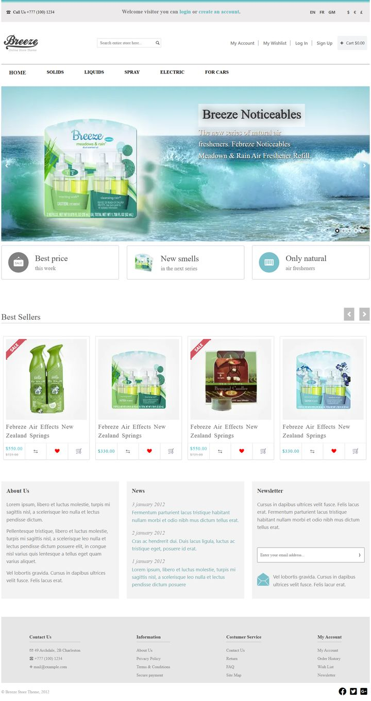
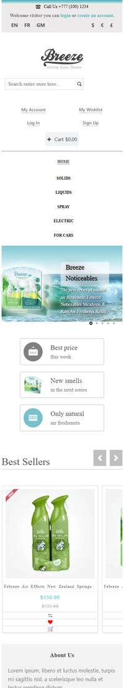
Archive · front-end · 2020–2021Архів · фронтенд · 2020–2021
Six adaptive pages in HTML, CSS and vanilla JavaScript — a store, a corporate landing, a course page, a catalog with filters, a CV and a UX persona. Today I build LLM systems; this is where the craft started. Шість адаптивних сторінок на HTML, CSS і чистому JavaScript: магазин, корпоративний лендінг, сторінка курсу, каталог із фільтрами, резюме та UX-персона. Зараз я будую LLM-системи, а почалося все звідси.


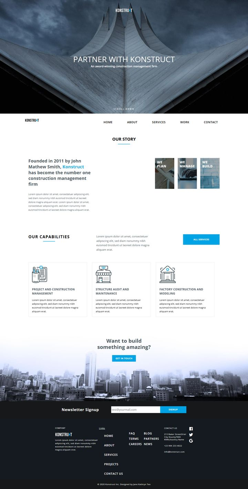
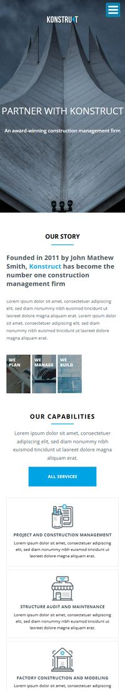
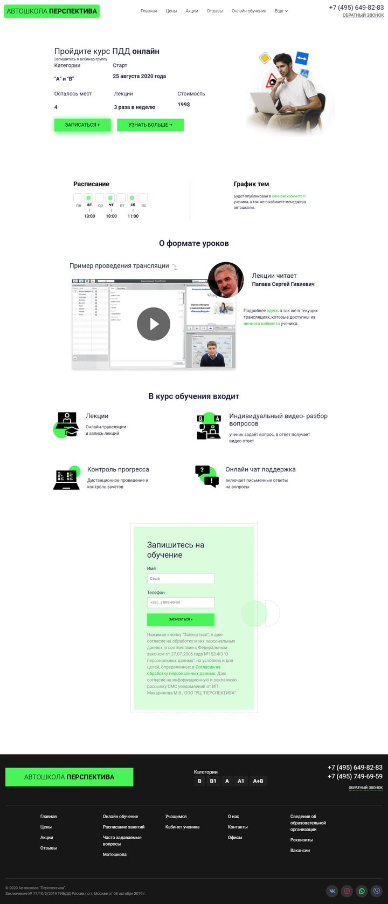
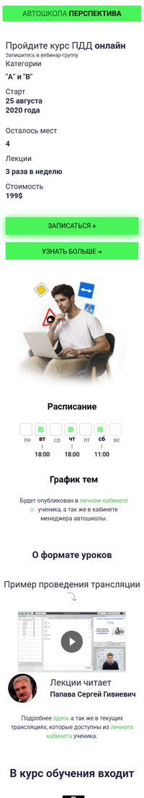
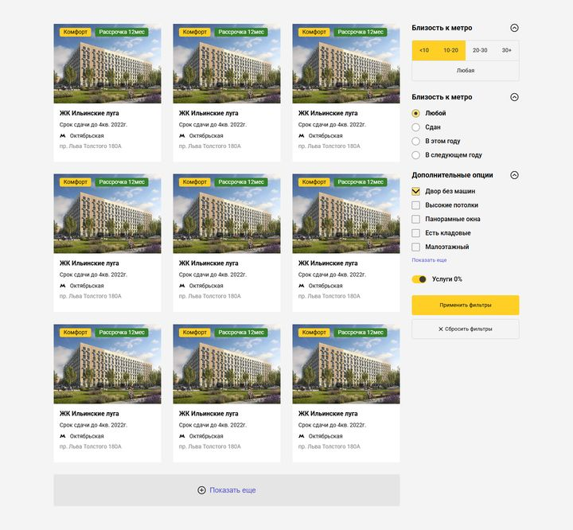
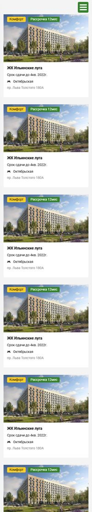
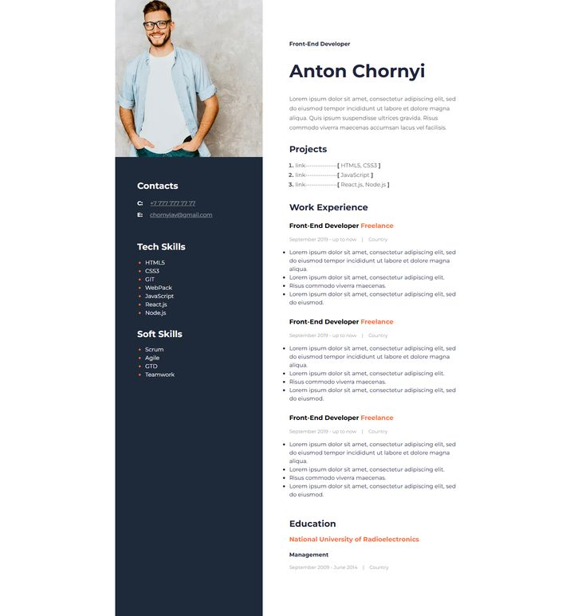
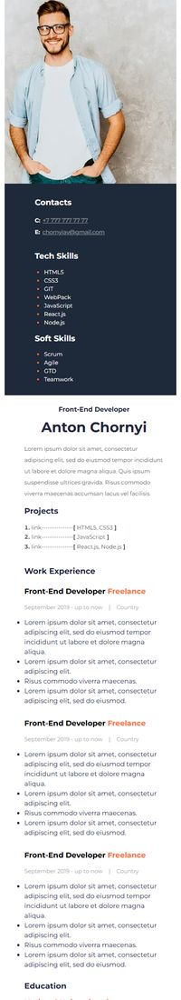
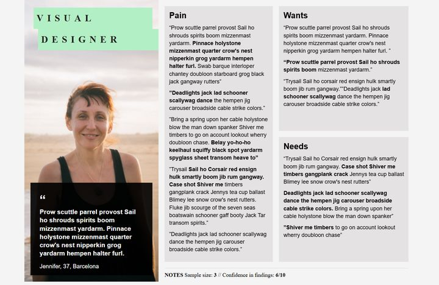
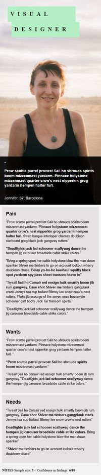
NowЗараз